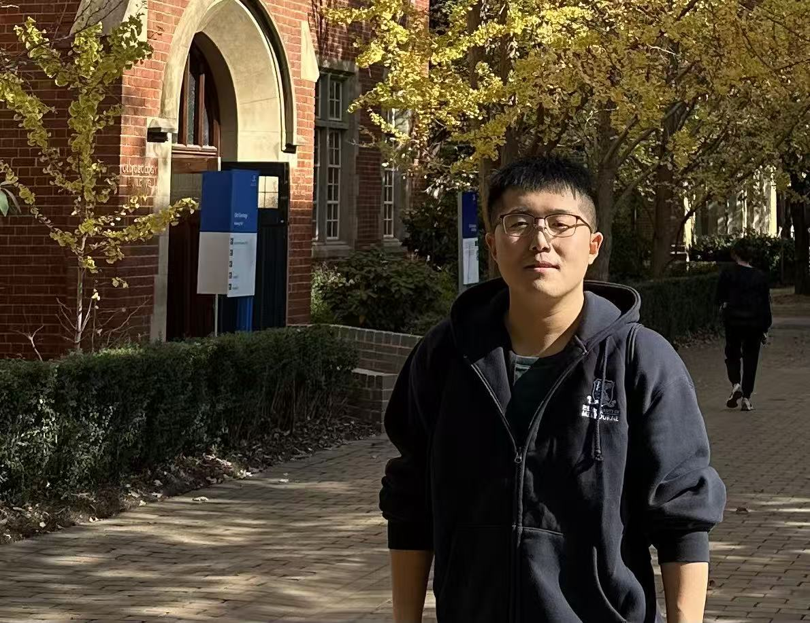

|
Erdun Gao
Research Fellow
Kernels and Information Processing Systems (KIPS) Group
Responsible AI Research Centre (RAIR)
Australian Institute for Machine Learning (AIML)
School of Mathematical Sciences, Adelaide University
Address: AIML Building, Lot Fourteen, Adelaide
Email: erdun.gao AT outlook.com
|

|
About Me
I am a Research Fellow at the
RAIR,
AIML,
where I am a member of the
KIPS Group
led by Prof. Dino Sejdinovic.
I received my Ph.D. in Applied Statistics (2025) from The University of Melbourne,
where I was part of the
Machine Learning and Reasoning (MLR) Group,
advised by Prof. Mingming Gong and
Prof. Howard Bondell.
I also hold an M.S. in Signal and Information Processing (2020),
supervised by
Prof. Zhibin Pan,
and a B.E. in Information Engineering (2017),
both from Xi’an Jiaotong University.
Research Interests
My long-term research goal is to build reliable decision-making systems,
with a focus on causal inference and uncertainty quantification.
I believe that uncovering cause-and-effect relationships and properly
accounting for uncertainty are key to making AI systems both robust and
interpretable in high-stakes scenarios.
I also occasionally work on broader machine learning problems related to
data and models.
- Core Causality: Causal Discovery, Causal Effect Estimation, Causal Experimental Design.
- Causality & Machine Learning: Causal Generative Models, Causal LLMs, Causal Foundation Models.
- Machine Learning: Data Valuation, Context-Informed Learning, Uncertainty in LLMs.
Main Papers
[Full List]
[Google Scholar]
-
Observationally Informed Adaptive Causal Experimental Design, Preprint.
Erdun Gao, Liang Zhang, Jake Fawkes, Aoqi Zuo, Wenqin Liu, Haoxuan Li, Mingming Gong, Dino Sejdinovic
-
Causal-EPIG: A Prediction-Oriented Active Learning Framework for CATE Estimation, Preprint.
Erdun Gao, Jake Fawkes, Dino Sejdinovic
-
Concept Component Analysis: A Principled Approach for Concept Extraction in LLMs, Preprint.
Yuhang Liu, Erdun Gao, Dong Gong, Anton van den Hengel, Javen Qinfeng Shi
-
ActiveCQ: Active Estimation of Causal Quantities, ICLR, 2026.
Erdun Gao, Dino Sejdinovic
-
Domain Generalization via Content Factors Isolation: A Two-level Latent Variable Modeling Approach, MLJ, 2025.
Erdun Gao, Howard Bondell, Shaoli Huang, Mingming Gong
-
MissScore: High-Order Score Estimation in the Presence of Missing Data, ICML, 2025.
Wenqin Liu, Haoze Hou, Erdun Gao, Biwei Huang, Qiuhong Ke, Howard Bondell, Mingming Gong
-
A Variational Framework for Estimating Continuous Treatment Effects with Measurement Error, ICLR, 2024.
Erdun Gao, Howard Bondell, Wei Huang, Mingming Gong
-
Causal Discovery with Mixed Linear and Nonlinear Additive Noise Models: A Scalable Approach, CLeaR, 2024.
Wenqin Liu, Biwei Huang, Erdun Gao, Qiuhong Ke, Howard Bondell, Mingming Gong
-
FedDAG: Federated DAG Structure Learning, TMLR, 2023.
Erdun Gao, Junjia Chen, Li Shen, Tongliang Liu, Mingming Gong, Howard Bondell
-
MissDAG: Causal Discovery in the Presence of Missing Data with Continuous Additive Noise Models, NeurIPS, 2022.
Erdun Gao, Ignavier Ng, Mingming Gong, Li Shen, Wei Huang, Tongliang Liu, Kun Zhang, Howard Bondell
Experience
-
Research Fellow
Jan 2026 – Present
Responsible AI Research Centre, AIML&CSIRO
-
Researcher
July 2024 – Dec 2025
Centre for Augmented Reasoning, AIML
-
Postgraduate Studentship
Aug 2023 – Apr 2024
CSIRO
-
Research Intern
Mar 2021 – Mar 2022
JD Explore Academy
-
Research Intern
Oct 2020 – Mar 2021
Huawei Noah's Ark Lab
Honors & Awards
- Science Abroad Travelling Scholarships (Unimelb)
2022, 2024
- NeurIPS Scholar Award
2022
- Australian Government RTP Scholarship
2021–2024
- Outstanding Master Thesis Award (XJTU)
2020
- Outstanding Graduate (XJTU)
2017, 2020
- China National Scholarship
2019
- First-class Academic Scholarship (XJTU)
2018, 2019
- Outstanding Student (XJTU)
2014–2019
- Tangzhongying Scholarship (XJTU)
2013–2017
Academic Service
-
Journal Reviewer: TMLR, TNNLS, TCSVT, MLJ, NN, JSCS
-
Conference Reviewer:
ICML (2022–2026), ICLR (2023–2026), NeurIPS (2023, 2025), UAI (2022–2025)
-
Organising Committee:
Next Generation Responsible AI Symposium (2025)
© Erdun Gao | Last updated: Jan-2026